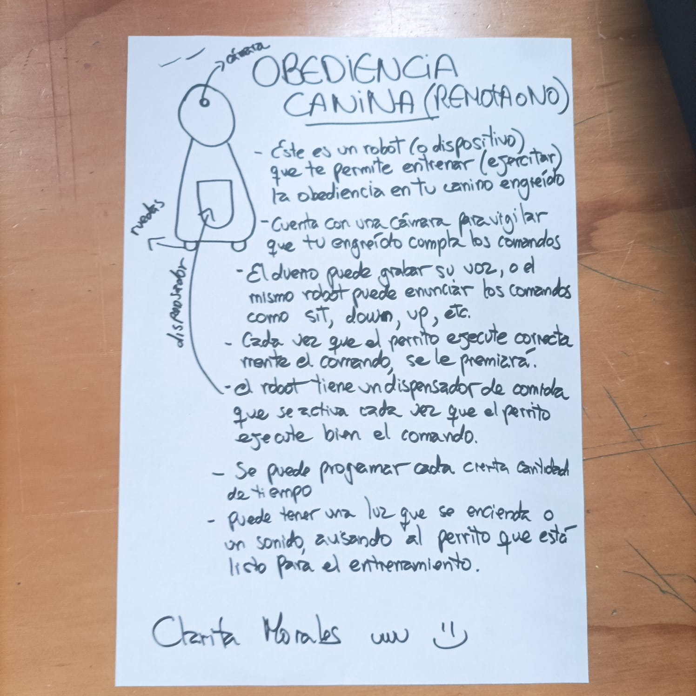

BarkBot Trainer
En nuestra reciente dinámica, se nos retó a concebir soluciones innovadoras a problemas cotidianos mediante el uso de la fabricación digital. Mi propuesta fue crear un robot de obediencia canina. Este dispositivo no solo facilita el entrenamiento de tu querido perro, sino que también supervisa y asegura el cumplimiento de los comandos mediante una cámara integrada.
Los propietarios tienen la opción de personalizar la experiencia grabando sus propias voces o permitiendo que el robot emita comandos estándar como 'sit', 'down' y 'up'. La obediencia se recompensa automáticamente: cada vez que el perro responde correctamente, recibe un premio de un dispensador de comida incorporado en el robot.
Además, el dispositivo ofrece flexibilidad con una programación ajustable, permitiendo establecer intervalos específicos para las sesiones de entrenamiento. Para mayor eficacia, se puede activar una luz o un sonido que indique al canino que es hora de entrenar, facilitando así un aprendizaje estructurado y efectivo.
